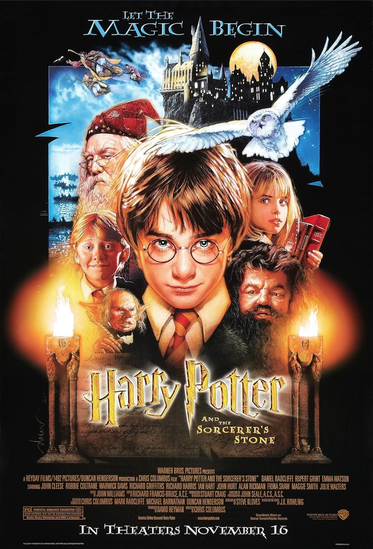
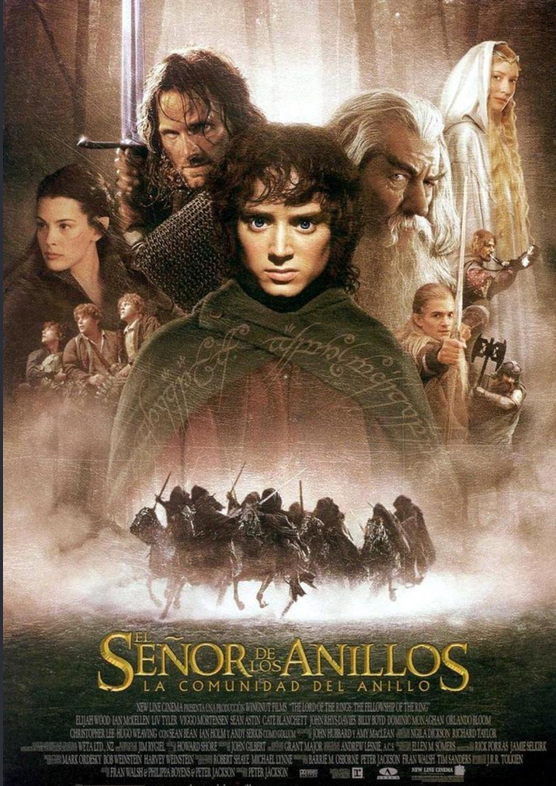
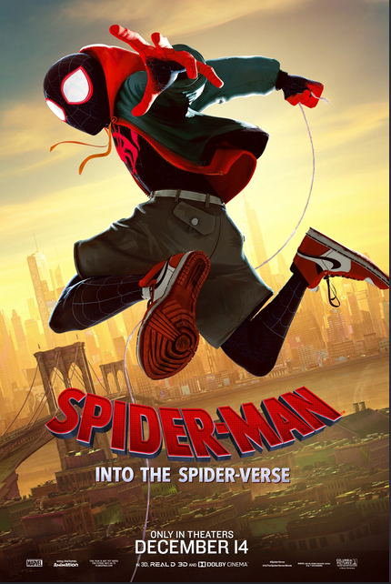

La primera película de la saga de Harry Potter. Me gusta porque muestra el inicio de todo: un niño que descubre que es mago y entra a un mundo mágico lleno de misterio, amistad y aventura en el Colegio Hogwarts.

El inicio de la trilogía de El Señor de los Anillos. Me encanta por su historia épica de amistad y sacrificio, siguiendo a Frodo y sus compañeros en su misión de destruir el Anillo Único.

La historia de Miles Morales convirtiéndose en Spider-Man. Me gusta por su estilo visual único tipo cómic y porque presenta a un héroe distinto al clásico Peter Parker, con una historia muy emotiva sobre encontrar tu propio camino.
